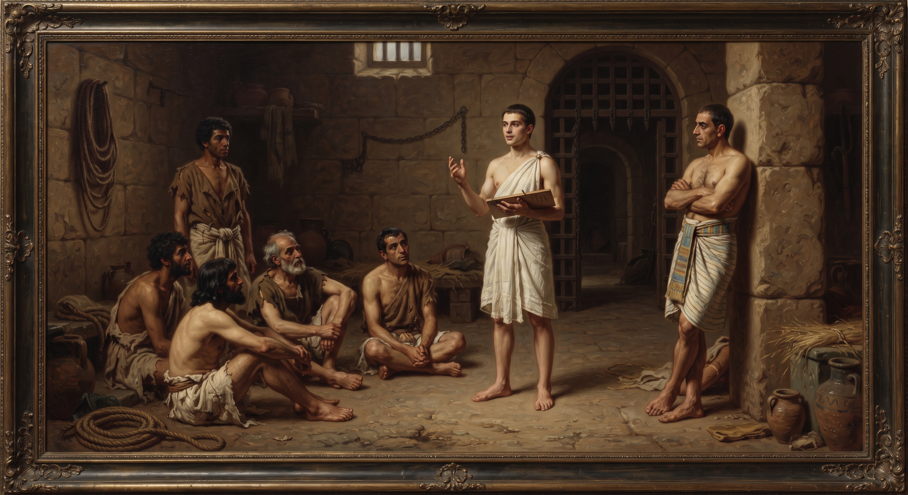

Genesis
Chapter Thirty-Nine
King James Version
And Joseph was brought down to Egypt; and Potiphar, an officer of Pharaoh, captain of the guard, an Egyptian, bought him of the hands of the Ishmeelites, which had brought him down thither. 2And the LORD was with Joseph, and he was a prosperous man; and he was in the house of his master the Egyptian. 3And his master saw that the LORD was with him, and that the LORD made all that he did to prosper in his hand. 4And Joseph found grace in his sight, and he served him: and he made him overseer over his house, and all that he had he put into his hand. 5And it came to pass from the time that he had made him overseer in his house, and over all that he had, that the LORD blessed the Egyptian's house for Joseph's sake; and the blessing of the LORD was upon all that he had in the house, and in the field. 6And he left all that he had in Joseph's hand; and he knew not ought he had, save the bread which he did eat. And Joseph was a goodly person, and well favoured.
7And it came to pass after these things, that his master's wife cast her eyes upon Joseph; and she said, Lie with me. 8But he refused, and said unto his master's wife, Behold, my master wotteth not what is with me in the house, and he hath committed all that he hath to my hand; 9There is none greater in this house than I; neither hath he kept back any thing from me but thee, because thou art his wife: how then can I do this great wickedness, and sin against God? 10And it came to pass, as she spake to Joseph day by day, that he hearkened not unto her, to lie by her, or to be with her.
11And it came to pass about this time, that Joseph went into the house to do his business; and there was none of the men of the house there within. 12And she caught him by his garment, saying, Lie with me: and he left his garment in her hand, and fled, and got him out.
13And it came to pass, when she saw that he had left his garment in her hand, and was fled forth, 14That she called unto the men of her house, and spake unto them, saying, See, he hath brought in an Hebrew unto us to mock us; he came in unto me to lie with me, and I cried with a loud voice: 15And it came to pass, when he heard that I lifted up my voice and cried, that he left his garment with me, and fled, and got him out. 16And she laid up his garment by her, until his lord came home. 17And she spake unto him according to these words, saying, The Hebrew servant, which thou hast brought unto us, came in unto me to mock me: 18And it came to pass, as I lifted up my voice and cried, that he left his garment with me, and fled out.
19And it came to pass, when his master heard the words of his wife, which she spake unto him, saying, After this manner did thy servant to me; that his wrath was kindled. 20And Joseph's master took him, and put him into the prison, a place where the king's prisoners were bound: and he was there in the prison.
21But the LORD was with Joseph, and shewed him mercy, and gave him favour in the sight of the keeper of the prison. 22And the keeper of the prison committed to Joseph's hand all the prisoners that were in the prison; and whatsoever they did there, he was the doer of it. 23The keeper of the prison looked not to any thing that was under his hand; because the LORD was with him, and that which the LORD did, he made prospered.
7And it came to pass after these things, that his master's wife cast her eyes upon Joseph; and she said, Lie with me. 8But he refused, and said unto his master's wife, Behold, my master wotteth not what is with me in the house, and he hath committed all that he hath to my hand; 9There is none greater in this house than I; neither hath he kept back any thing from me but thee, because thou art his wife: how then can I do this great wickedness, and sin against God? 10And it came to pass, as she spake to Joseph day by day, that he hearkened not unto her, to lie by her, or to be with her.
11And it came to pass about this time, that Joseph went into the house to do his business; and there was none of the men of the house there within. 12And she caught him by his garment, saying, Lie with me: and he left his garment in her hand, and fled, and got him out.
13And it came to pass, when she saw that he had left his garment in her hand, and was fled forth, 14That she called unto the men of her house, and spake unto them, saying, See, he hath brought in an Hebrew unto us to mock us; he came in unto me to lie with me, and I cried with a loud voice: 15And it came to pass, when he heard that I lifted up my voice and cried, that he left his garment with me, and fled, and got him out. 16And she laid up his garment by her, until his lord came home. 17And she spake unto him according to these words, saying, The Hebrew servant, which thou hast brought unto us, came in unto me to mock me: 18And it came to pass, as I lifted up my voice and cried, that he left his garment with me, and fled out.
19And it came to pass, when his master heard the words of his wife, which she spake unto him, saying, After this manner did thy servant to me; that his wrath was kindled. 20And Joseph's master took him, and put him into the prison, a place where the king's prisoners were bound: and he was there in the prison.

Study: A Prisoner, Twice Over
This short chapter repeats one phrase three separate times, and it's worth noticing how much weight that repetition carries: "the LORD was with Joseph." It's given as the explanation for his rise in Potiphar's household, and it's given again, unchanged, as the explanation for what happens to him after everything falls apart. The same phrase covers both his prosperity and his imprisonment. Whatever it means for God to be "with" someone, this chapter insists it isn't only true when things are going well.
Joseph's actual temptation plays out over what the text calls "day by day" — not a single dramatic moment but sustained, repeated pressure from someone with real power over his circumstances. His reasoning for refusing her is worth reading closely: not fear of being caught, not concern for his own safety, but a direct appeal to trust and to God — "how then can I do this great wickedness, and sin against God?" He names loyalty to Potiphar and loyalty to God in the same breath, as though betraying one would mean betraying both.
One reading holds Joseph up directly as a model for how integrity should hold, regardless of provocation or opportunity.
“
“Potiphar's wife, this beautiful woman, honorable, highest, one of the highest women there was in the country, begged him and persuaded him. And he turned, and she caught him and tried to hug him up to her. And he jerked till he even pulled his coat off, and run from her... And for that he went to the dungeon. But, in the dungeon, God was with him, no matter where they put him.”
— William Branham, “The Sixfold Purpose of Gabriel's Visit to Daniel” (61-0730E)
What's genuinely unjust about what follows is easy to skim past: Joseph's integrity doesn't protect him. If anything, it's turned directly into the evidence used against him. The garment he leaves behind while fleeing becomes exhibit one in a lie — the second time in this story a piece of Joseph's own clothing is used to accuse him falsely, the coat dipped in blood back in chapter 37, and now this garment left in the wrong hands entirely.
One reading takes the imprisonment itself even further, treating it as something Joseph actually needed to go through, not merely something unjustly inflicted on him.
“
“What did God have to do to him? Put him in prison, put him right straight to the prison... He also became a total failure, to himself. All that he knew, all that he understood, and everything, he become a total failure... But he become a prisoner. And God kept him, a prisoner, until the wheel got rolled up right.”
— William Branham, “A Prisoner” (63-0717)
Whatever a reader makes of that framing, the chapter's closing verses do something remarkable with Joseph's circumstances: the very same trust that once ran an Egyptian nobleman's entire household now runs a royal prison from the inside. Nothing about his situation has actually improved. He's still a falsely accused slave in a foreign country's dungeon. And yet the pattern holds exactly as it did before — responsibility finds him, prosperity follows his hand, and the keeper "looked not to any thing that was under his hand," for the same reason Potiphar once didn't either.